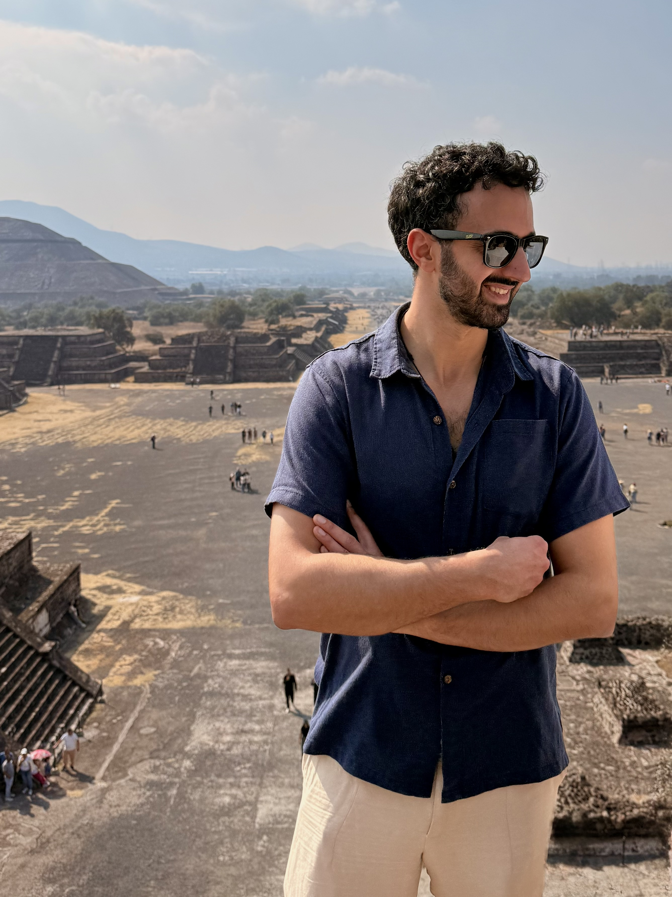

Erforsche die
Mysterien der
Zeit
Fühlst du dich festgefahren? Finde tiefe Klarheit für die
wichtigsten Entscheidungen deines Lebens.
Individuelle Tarot-Sitzungen, die das Wissen ans Licht
bringen, das bereits in dir liegt.
Zu Euren Diensten,
Majestät
„Könige und Königinnen hatten schon immer einen Magier, der sie in ihren Entscheidungen begleitete."
Von den alten Königen Sumers und Babylons bis zu US-Präsident Ronald Reagan: Einen Magier am Hof zu haben, der bei Entscheidungen unterstützt, den Überblick über den Moment schafft und zur inneren Stärke führt, war das Rezept all dieser Führenden.
Mit meinen Tarot-Readings schaffe ich einen Raum, in dem du erspüren kannst, was in deinem Leben unter der Oberfläche wirklich vor sich geht. Du bist nie verloren, denn alles Wissen liegt bereits in dir.
- Erkenne blinde Flecken in Beziehungen und Mustern
- Finde Orientierung bei großen Lebensentscheidungen
- Verbinde dich wieder mit deiner eigenen Intuition
Was hier hilft, ist kein Ratschlag, sondern eine Begleitung, die tiefer taucht als dein waches Bewusstsein. Eine Karte, mit der du dein Leben navigierst.
Wirf einen Blick in dich selbst — mit dem Magier, dem bereits 350.000
Menschen folgen.
Selbstverständlich sind alle Sitzungen vertraulich.
30-Minuten Tarot-Reading
Eine fokussierte Sitzung für eine konkrete Frage oder Situation.
Jetzt buchenSand der Zeit
Full Experience
mit Filip & Jan
Die tiefste Erfahrung – zwei Perspektiven, ein gemeinsamer Raum für deine Reise.
Jetzt buchenWarum das Tarot wirkt
Der Ursprung des Tarots ist ziemlich geheimnisvoll. Manche behaupten, es stamme aus dem alten Ägypten. Andere sind der Ansicht, es sei erstmals als Kartenspiel im Frankreich und Italien der Renaissance aufgetaucht.
Und ich mag diese Ambiguität, denn für mich beschreibt sie das Tarot sehr gut. Es gibt zweifellos eine mystische Seite an diesem Werkzeug. Immer wieder staune ich über die Genauigkeit der Karten. Meine persönliche Sicht kommt dem nahe, was C. G. Jung diesem Phänomen zuschrieb: Synchronizität.
„Das Tarot ist an sich ein Versuch, die Bestandteile des Flusses des Unbewussten darzustellen, und eignet sich daher für eine intuitive Methode, die den Fluss des Lebens verstehen, womöglich sogar zukünftige Ereignisse vorhersagen will — in jedem Fall aber die Bedingungen des gegenwärtigen Moments lesbar macht." — C. G. Jung
Es scheint, als kollidierten das kollektive Unbewusste und unser eigenes im Mischen und Legen der Karten. Es entsteht eine Empfindung, die sich bedeutsam anfühlt und auf wertvolle Weise für den Menschen gedeutet werden kann, der ein Reading empfängt.
Das Intellektuelle beiseite — willst du ein Reading selbst erleben?
Bereit? Wähle deine Sitzung.
Jetzt buchenFilip Strüven
Filip hat sich ausführlich mit den alten Symbolsprachen beschäftigt: mit antiker Geschichte, Mythologie, Alchemie, esoterischen Überlieferungen und der Tiefenpsychologie C. G. Jungs. Für ihn ist Tarot keine Wahrsagerei, sondern ein Spiegel und eine Karte. Was in einer Sitzung entsteht, kommt nicht von außen — es ist bereits in dir.
Als DaStarchild teilt er diese Arbeit und Forschung öffentlich und hat damit ein weltweites Publikum von über 35 Millionen Menschen erreicht — mit Videos, die tief in jene Fragen eintauchen, die die Menschheit seit Jahrtausenden begleiten.

Jan Polifka
Jan verbindet tiefe Persönlichkeitsentwicklung mit gelebter Spiritualität. Geprägt durch sein eigenes, einschneidendes Spiritual Awakening in Kambodscha im Jahr 2020 und die damit verbundenen Sinn- und Identitätsfragen, steht er heute für einen erfrischend pragmatischen Zugang zur Mystik – radikal ehrlich und völlig ohne Dogmen.
Um die Geheimnisse des Okkultismus, mystischer Traditionen und alter Zivilisationen nicht nur theoretisch zu studieren, ist Jan um die ganze Welt gereist. Er hat die Energie antiker Stätten wie Teotihuacán, der Pyramiden von Gizeh, Angkor Wat und Chichén Itzá hautnah erlebt.
Diese Erfahrungen aus erster Hand fließen auch in seinen Podcast „Iraner Jones untersucht“ ein, in dem er diesen Themen auf den Grund geht. Genau diesen analytischen Forschergeist bringt Jan nun in die Welt des Tarots ein: Er decodiert alte Symboliken so, dass sie für dich greifbar und im modernen Leben anwendbar werden.